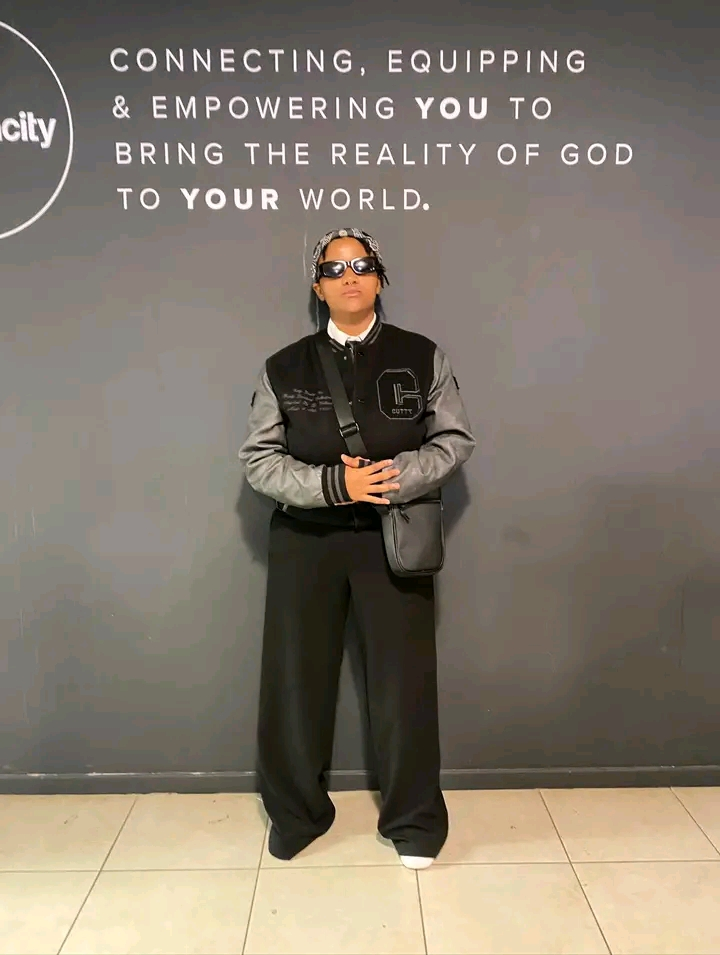

More than clothing — it’s a movement of faith.
Focus On God Apparel is a Christian clothing brand that encourages everyone to wear their faith boldly. Our mission is to spread love, light, and positivity through every design, inspiring confidence and hope in every individual.
Every design reflects your faith and reminds you of God’s love every day.
We prioritize high-quality materials that are comfortable and durable.
We aim to connect believers through fashion and create a supportive community.

I believe that how we move, how we create, and how we serve are all reflections of a deeper purpose. My journey is defined by a "Focus On God" mindset, a commitment to excellence that spans from the karate mat to the cutting table of fashion design.
I am the founder of Focus On God Apparel, a lifestyle brand born in Botswana. My mission is to create more than just clothing. I design pieces that serve as a testimony to faith, resilience, and personal growth. Whether you’re at the gym or in the city, the apparel is a reminder to stay grounded in your purpose. This vision led to my recognition as a featured entrepreneur, celebrating the impact of creative leadership in our community.
My professional drive is rooted in years of competitive athletics. As a long-time Karateka and national gold medalist, I’ve spent over a decade mastering the discipline required to compete at the highest level. That same endurance fueled my finish at the 2024 Diacore Gaborone Marathon and continues to drive me every time I step onto the basketball court. For me, sports are the ultimate training ground for life and business.
I am constantly looking for ways to bridge creativity with technology. In 2026, I had the honor of being a Top 5 Finalist in the Cavista Global Hackathon, where I applied my design-thinking approach to solve complex, real-world challenges alongside some of the brightest minds in tech.
Whether I am designing a new collection, training for my next race, or developing a tech solution, my goal remains the same: to inspire others to pursue their passions with unwavering faith and relentless discipline.
FOCUS ON GOD Apparel was born from transformation.
I didn’t always walk in confidence. I experienced bullying, and seasons where I struggled deeply with my identity and self-worth.
There were moments when everything felt overwhelming. But in January 2024, during a Christian youth camp called Youth Week, I encountered God in a way that changed my life forever.
For the first time, I understood that my identity was not defined by pain, opinions, or my past. It was defined by Christ. On March 30, 2024, I was baptized, and since then, I have walked in a freedom I once prayed for.
FOCUS ON GOD Apparel is more than clothing. It is a declaration.
This brand exists to remind young people all over the world that their identity is found in God. In a generation battling comparison and pressure, we choose to focus on Him.
“Therefore, if anyone is in Christ, he is a new creation. The old has passed away; behold, the new has come.” — 2 Corinthians 5:17
— Warona Nichole Dedede(Nicky)
Founder, FOCUS ON GOD Apparel 🌍
While we started in Botswana, our vision is to inspire young people all over the world. We are committed to spreading faith-inspired fashion beyond borders.